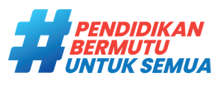
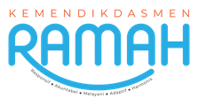
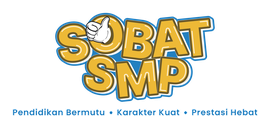

Tahun 2045. Kecerdasan buatan hadir di sekolah, pekerjaan, kota, dan keputusan manusia. Kamu adalah Future Architect — dan masa depan dirancang oleh pilihanmu.
NEXA bukan kuis. Kamu merancang sistem masa depan, melihat akibatnya, lalu menimbang mana yang layak dibangun. Tidak ada jawaban benar — yang ada adalah konsekuensi.
{{ tut.body }}
{{ endingDesc }}
{{ quizQ }}
Kamu menjawab tepat {{ quizRight }} dari {{ quizTotal }} soal. Skor ini tercatat di Hasil Akhir dan di ringkasan untuk guru.
Jawabanmu tersimpan di perangkat ini saja. Gunakan sebagai bahan bicara di kelas — tidak ada penilaian benar atau salah.